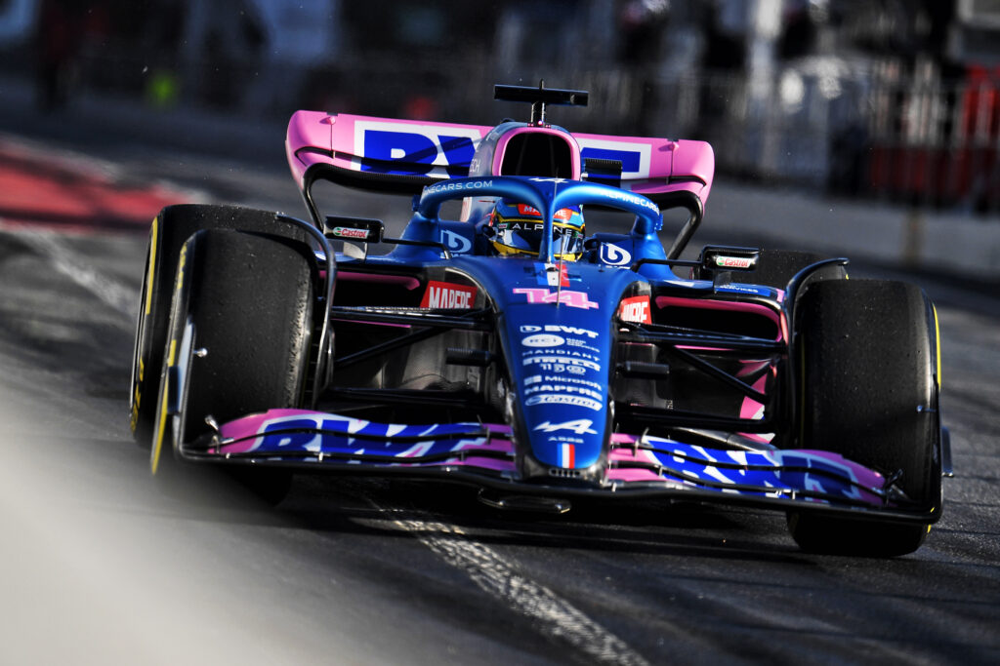

Fernando Alonso Díaz è nato a Oviedo il 29 luglio 1981, è un pilota automobilistico spagnolo, attivo in Formula 1 con la Alpine. In carriera si è laureato due volte campione del mondo di Formula 1 (2005 e 2006) con la scuderia Renault e ha trionfato, inoltre, a Le Mans 2018, 2019 e Daytona 2019. Soprannominato Magic Alonso e El Nano, oltre ad essere il pilota spagnolo di maggior successo, ha detenuto il record di più giovane vincitore di un Campionato mondiale di Formula 1, conseguito al termine della stagione 2005, e quello di più giovane bi-campione del mondo di categoria. Con la stagione 2007 è divenuto il secondo pilota, dopo Michael Schumacher, ad aver ottenuto un punteggio superiore a 100 punti nel campionato mondiale per tre stagioni consecutive. Nel 2014, in seguito al suo addio alla Ferrari, è risultato essere il pilota con più punti conquistati (1190) nella storia della scuderia, superato successivamente da Sebastian Vettel (1321). Oltre al campionato di Formula 1 e alle gare di durata, Alonso ha partecipato ad altre gare di grande rilevanza, come tre edizioni della 500 Miglia di Indianapolis e ad un Rally di Dakar. Alonso è anche ambasciatore UNICEF, nonché un dirigente della Grand Prix Drivers' Association. È considerato da parte della stampa, da parte dei tifosi e colleghi, nonché dagli esperti come uno dei più grandi talenti di sempre nelle corse automobilistiche, secondo la rivista statunitense Sports Illustrated nel 2013 figurava al terzo posto fra gli sportivi più ricchi e pagati del mondo. Il suo numero di gara è il 14. Il 14 agosto 2018 annuncia tramite un videoclip caricato su Instagram il suo ritiro dal campionato di Formula 1 per la fine della stagione, salvo poi rientrare nel circus a partire dalla stagione 2021 alla guida della Alpine; è il primo e unico spagnolo ad aver vinto un GP di Formula 1 e l'unico spagnolo campione del mondo della massima categoria. Fernando Alonso nasce a Oviedo, nel nord della Spagna. La madre Ana Maria lavorava in un grande magazzino, mentre il padre José Luis era stato assunto come meccanico in una fabbrica di esplosivi nei pressi della stessa città delle Asturie. Quest'ultimo, corridore dilettante kart, volle trasmettere la sua passione per i motori ai propri figli. Costruì allora un kart che era destinato alla sorella maggiore di Fernando, Lorena. Tuttavia la bambina non mostrò particolare interesse per questo sport e il fratello, con alcune modifiche alla vettura, poté così iniziare a coltivare la passione per le quattro ruote.  Per la stagione 2000 Alonso fu chiamato dalla Minardi come terzo pilota. Alonso fu il terzo pilota più giovane di sempre a partecipare a un Gran Premio di Formula 1 quando esordì al Gran Premio d'Australia con la Minardi. Il team fu nella prima parte della stagione sotto il controllo del nuovo proprietario Paul Stoddart, e la vettura affidata ad Alonso, la PS01, non si mostrò né rapida né tantomeno affidabile. Nondimeno le sue prestazioni furono buone tanto che, nella gara d'esordio, Alonso riuscì a far segnare il 19º tempo in qualifica, precedendo piloti alla guida di vetture più competitive. Alla quarta gara di Imola riuscì a stare davanti a entrambe le Benetton, particolarità che si sarebbe ripetuta più tardi nel campionato. Nella corsa finale a Suzuka chiuse 11º e il direttore del team Stoddart, quattro anni dopo, descrisse la sua prova come «53 giri da qualifica». A far notizia non fu tanto la posizione conquistata, quanto il numero di avversari di maggior esperienza messi alle spalle: Heinz-Harald Frentzen della Prost, la BAR-Honda di Olivier Panis, le due Arrows e Alex Yoong, nuovo compagno di squadra. Chiuse la stagione a 0 punti. I discreti risultati lo fecero conoscere a tutto il mondo e attirarono l'attenzione di molte scuderie di punta di Formula 1. Nel mese di settembre dello stesso anno la stampa europea sostenne che la Sauber volesse cercare di rimpiazzare Kimi Räikkönen con lo spagnolo ancorché, sia Felipe Massa, sia il collaudatore della Jaguar André Lotterer parevano essere in vantaggio rispetto allo stesso Alonso. Un mese più tardi Massa fu scelto dalla scuderia svizzera per il 2002. Alonso di conseguenza divenne collaudatore per la Renault, la quale aveva rilevato la Benetton, e nel 2002 completò 1642 giri di prove. Come previsto venne premiato la stagione seguente da Briatore, il quale lo pose, sostituendo Button, al fianco di Jarno Trulli. Nel giugno 2002 effettuò anche un test Jaguar sul circuito di Silverstone. Per la stagione 2004, decise di rimanere alla Renault e durante l'anno salì sul podio per quattro volte, senza tuttavia vincere un Gran Premio. A Indianapolis fu nuovamente protagonista di un incidente ad alta velocità mentre stava battagliando per la terza posizione. Da menzionare il secondo posto dietro a Michael Schumacher in Francia, dove il tedesco lottò fino alla fine per riuscire a strappare il successo; nelle qualifiche Alonso aveva ottenuto la sua prima e unica pole position della stagione. Dopo aver vinto il suo primo titolo nel 2005: «Vengo da un Paese che non ha tradizioni in F1. Ho lottato da solo per ottenere tutto quanto ho avuto. Nessuno mi ha aiutato. Tutta la carriera si è basata sui risultati che ho fatto nelle categorie minori, con gli sponsor che mi sono procurato da solo. Ora ho raggiunto il massimo che potevo raggiungere. Posso ringraziare la mia famiglia, al massimo tre, quattro persone, non di più. Pochi amici veri. In Spagna non ci tornerò prima del GP in Cina e non credo ci sarà nulla di speciale. Abbiamo provato a programmare qualcosa se avessi vinto il titolo, ma non è stato possibile per troppi interessi politici» Alonso vinse due titoli mondiali nella stagione 2005-2006 e nella stagione 2006-2007 alla guida della Renault. Il 14 agosto 2018 annuncia tramite un videoclip caricato su Instagram il suo ritiro dal campionato di Formula 1 per la fine della stagione, salvo poi rientrare nel circus a partire dalla stagione 2021 alla guida della Alpine.